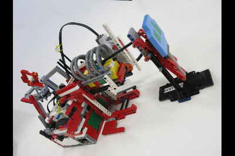
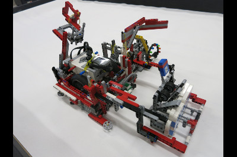
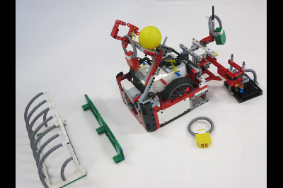
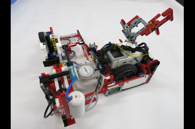
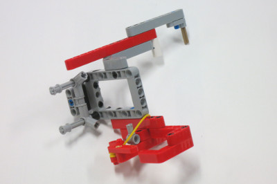

When designing our base robot, we establish criteria at the outset, such as desired footprint, height, balance, drive train, sensors to be used, user interface, etc. to arrive at a working prototype. We also strive to design and build a base robot which is robust and which features a frame around the chassis to provide structural rigidity as well as means to square up against walls and mission models. Before creating a prototype base robot we prepare some high level rudimentary drawings on a flip chart which we use to stimulate discussion amongst team members. Once the team settles on a high level base robot design we use LDD or ML CAD to create a 3D-drawing of the prototype. Doing so allows us to be as efficient as possible with regard to type and quantity of pieces used. Based on the final drawing, we construct our prototype base robot using LEGO pieces/elements. After creating a working prototype, we design attachments keeping in mind that these attachments need to be easy to install and remove, robust, and both passive and multi-purpose whenever possible. From testing the prototype base robot and the attachments, we make revisions to our work in order to combine and speed up missions and increase repeatability to achieve maximum efficiency. By the end of the season, our attachments will often be in their fifth or sixth iteration.
When first designing our robot we wanted to make sure that all the light sensors behaved similarly. The light sensors each return a small differences in readings because of variations in manufacturing. For example, if you were to place two different light sensors on the same black line, each would return different values for light intensity. Somtimes the difference may be significant. To make sure that all our light sensors had about the same reading we completely shielded ten light sensors to eliminate the variable of ambient light and recorded the reading for each of the light sensors on black, white, and green. We then found the four light sensors which have the closest reading to each other and used those four light sensors on the robot.
The green EV3 move blocks (Move Tank and Move Steering) are unreliable. Although they do have a built in PID feature, they still cannot move the robot in a straight line. To test this, we set a designated starting spot for the robot and then we ran it until it hit the wall on the other side of the table. We repeated this dozens of times and found that each time it would end up in a different spot on the other side of the table (up to one inch away from the previous run). Each time it would be up to one inch away from the previous run. Then, we made our own error-corrected move block (which you can read about in the programming section of this website). We conducted the same experiment using our block and found that there was much less error and it would consistently end up in the same spot.
Our base robot is VERY Robust and compact with a frame for strength. We also have four light sensors, for MAXIMUM FLEXIBILITY, with shielding from ambient light. The robot has sliders, which are steering neutral, and has narrow and hard wheels for more accuracy in both straight movements and turns. However, we sacrifice some accuracy due to our large diameter wheels which amplify the error associated with the drive motor rotation sensors.
| Name of Attachment | Description | Picture |
|---|---|---|
| Loop Delivery Attachment | This drop-in attachment has an extra D-motor that we plug into the robot when we install the attachment. The D-motor spins flexible tubes opening the door. The attachment hangs the five loops onto the Project Based Learning mission model passively. It also delivers the apprenticeship model. |  |
| Key Mission Attachment | This is a passive attachment that accomplishes the Changing Conditions, Engagement and Cloud models, as well as picks up the loose loop. The attachment is built onto a frame around the robot and attached to it are guide wheels. The Cloud key is inserted and left in the model after activation. |  |
| Robotic Arm and Reverse Engineering Basket Attachment | This attachment is passive and drops the robotic arm insert into the Robotic Arm mission model and catches the loop. As well, the attachment has an elastic band-powered one-way latch to capture the Reverse Engineering basket. |  |
| Sear Engine Loop Attachment | This drop-in attachment uses pneumatics to spin the Search Engine exactly one rotation. By doing this, we know (before running the mission) which loop color we will have to collect. The one-way latch can be positioned in one of three different positions: on the left (to get the yellow loop), in the middle (to get the blue loop) or on the right (to get the red loop). |  |
| Soccer Ball Launcher | This is an arm attached to the A-motor that launches the ball into the goal and takes the loop from the Using the Right Senses mission model. It also removes the loop from the Community Learning mission model. |  |